sierra
The default: warm paper, deep conifer, signal orange.
{kind=link}
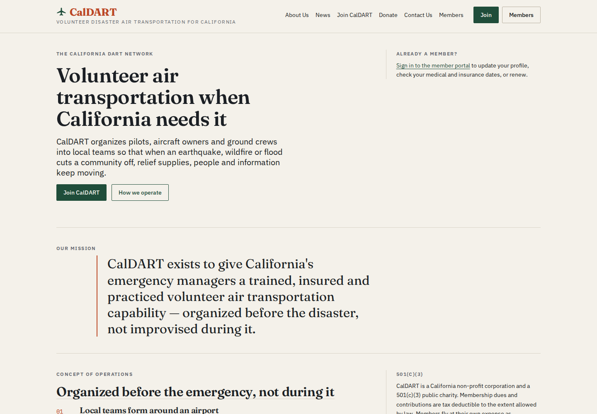
{kind=link}
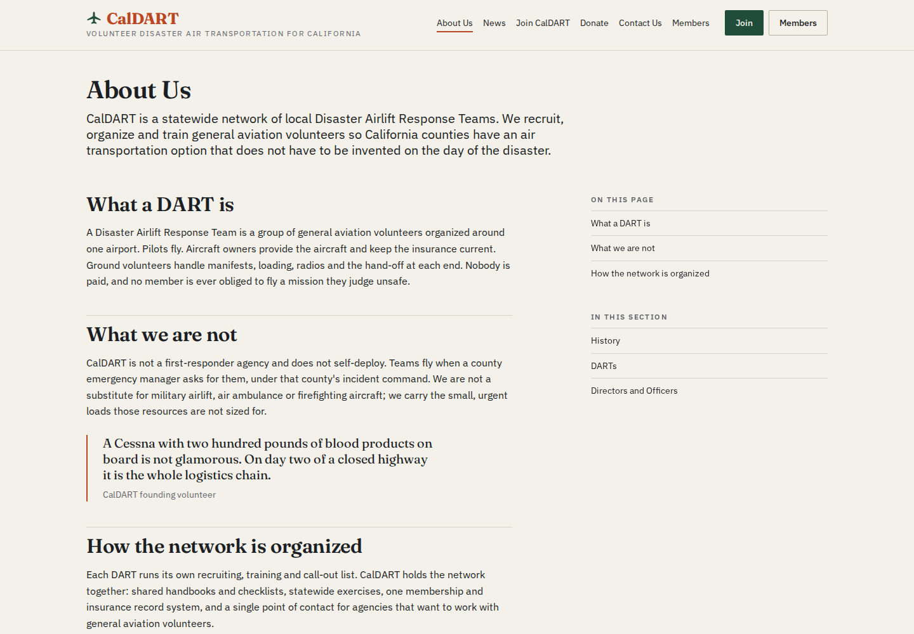
{kind=link}
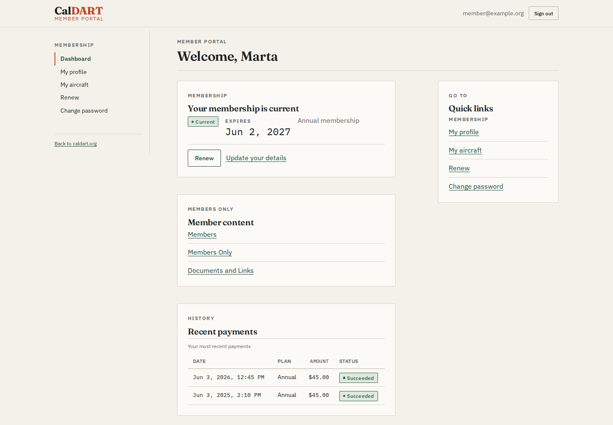
{kind=link}
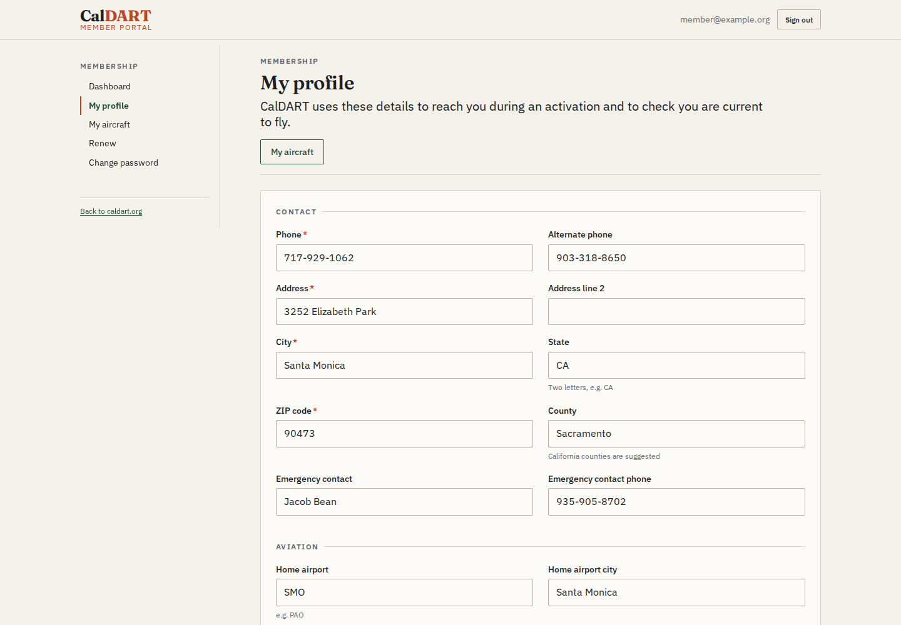
{kind=link}
Palette
bg#f4f1eabg-raised#fbfaf6bg-sunken#ebe7ddfg#1b1f24primary#1f4d3aprimary-fg#f7f5efprimary-hover#17392baccent#bb4623secondary#f2a900rule#d9d3c7rule-strong#b9b1a0muted#64676eok#27693fwarn#825900bad#ab3628focus#1f4d3aFonts
| Role | Family | Package |
|---|---|---|
| Display | Fraunces | @fontsource-variable/fraunces |
| Body | IBM Plex Sans | @fontsource/ibm-plex-sans |
| Mono | IBM Plex Mono | @fontsource/ibm-plex-mono |
Contrast (WCAG 2.1 AA)
| Pair | Ratio | Needs | |
|---|---|---|---|
| fg on bg | 14.68:1 | 4.5:1 | pass |
| fg on bg-raised | 15.86:1 | 4.5:1 | pass |
| fg on bg-sunken | 13.41:1 | 4.5:1 | pass |
| muted on bg | 5.02:1 | 4.5:1 | pass |
| muted on bg-raised | 5.42:1 | 4.5:1 | pass |
| muted on bg-sunken | 4.59:1 | 4.5:1 | pass |
| primary on bg | 8.54:1 | 4.5:1 | pass |
| primary on bg-raised | 9.22:1 | 4.5:1 | pass |
| primary-fg on primary | 8.83:1 | 4.5:1 | pass |
| primary-fg on primary-hover | 11.63:1 | 4.5:1 | pass |
| accent on bg | 4.64:1 | 4.5:1 | pass |
| ok on bg | 5.86:1 | 4.5:1 | pass |
| warn on bg | 5.51:1 | 4.5:1 | pass |
| bad on bg | 5.66:1 | 4.5:1 | pass |
| ok on ok-bg over bg | 4.92:1 | 4.5:1 | pass |
| warn on warn-bg over bg | 4.68:1 | 4.5:1 | pass |
| bad on bad-bg over bg | 4.71:1 | 4.5:1 | pass |
| focus on bg | 8.54:1 | 3:1 | pass |
Reproduce
- Theme file:
frontend/src/styles/themes/sierra.css - Attribute the server renders:
<html data-theme="sierra"> - Select it in Wagtail: Settings → Site settings → Theme, then save.
- Preview without saving (website or system administrator):
https://<your-site>/?theme=sierra - Font packages:
@fontsource-variable/fraunces @fontsource/ibm-plex-sans @fontsource/ibm-plex-mono
pacific
Cooler paper and a deep pacific blue primary.
{kind=link}
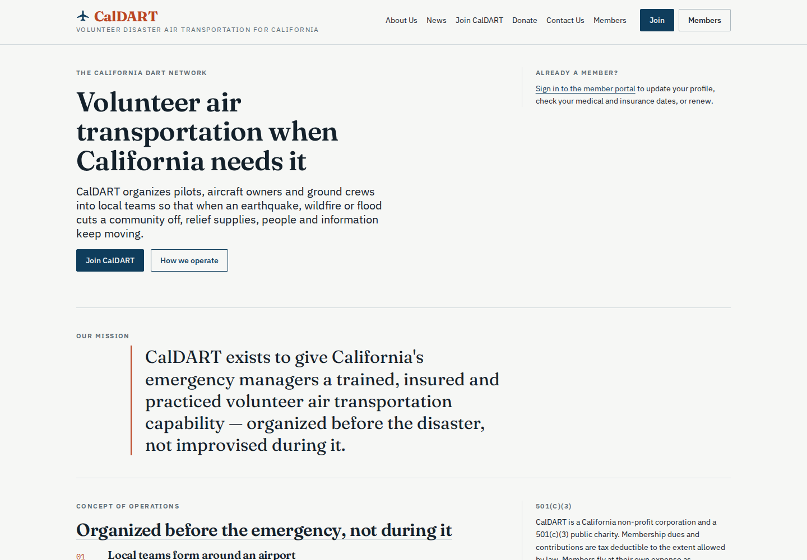
{kind=link}
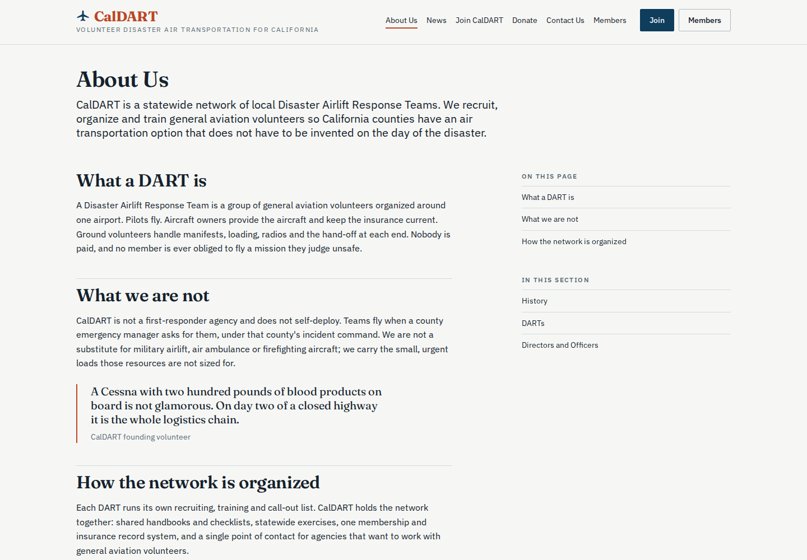
{kind=link}
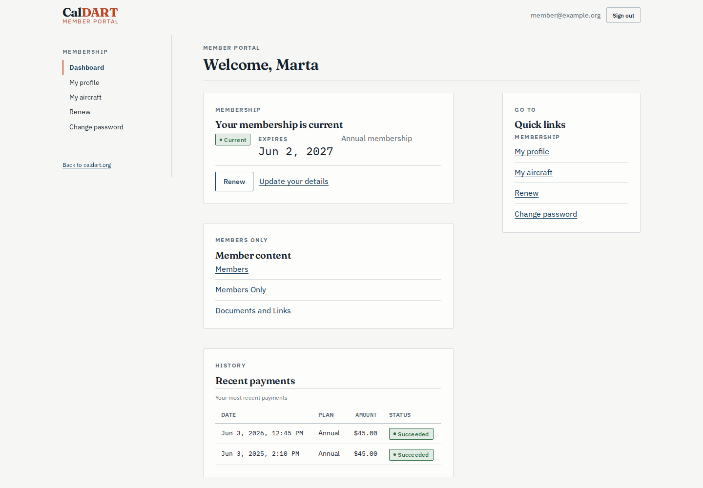
{kind=link}
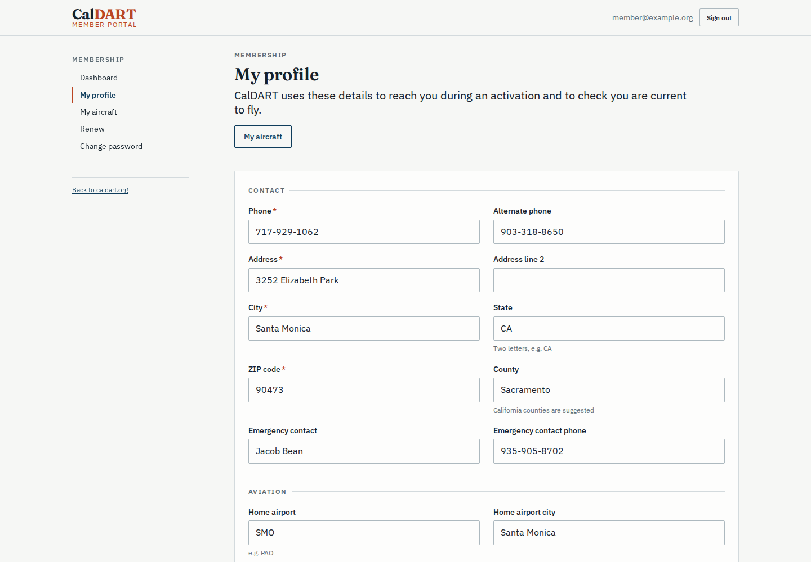
{kind=link}
Palette
bg#f6f7f5bg-raised#fdfdfcbg-sunken#e9eceafg#14212bprimary#0f3d5cprimary-fg#f4f8faprimary-hover#0a2c43accent#bb4623secondary#8da9b8rule#d3daddrule-strong#adb9bfmuted#5c6b74ok#27693fwarn#825900bad#ab3628focus#0f3d5cFonts
| Role | Family | Package |
|---|---|---|
| Display | Fraunces | @fontsource-variable/fraunces |
| Body | IBM Plex Sans | @fontsource/ibm-plex-sans |
| Mono | IBM Plex Mono | @fontsource/ibm-plex-mono |
Contrast (WCAG 2.1 AA)
| Pair | Ratio | Needs | |
|---|---|---|---|
| fg on bg | 15.24:1 | 4.5:1 | pass |
| fg on bg-raised | 16.09:1 | 4.5:1 | pass |
| fg on bg-sunken | 13.77:1 | 4.5:1 | pass |
| muted on bg | 5.13:1 | 4.5:1 | pass |
| muted on bg-raised | 5.41:1 | 4.5:1 | pass |
| muted on bg-sunken | 4.63:1 | 4.5:1 | pass |
| primary on bg | 10.61:1 | 4.5:1 | pass |
| primary on bg-raised | 11.20:1 | 4.5:1 | pass |
| primary-fg on primary | 10.67:1 | 4.5:1 | pass |
| primary-fg on primary-hover | 13.52:1 | 4.5:1 | pass |
| accent on bg | 4.87:1 | 4.5:1 | pass |
| ok on bg | 6.15:1 | 4.5:1 | pass |
| warn on bg | 5.78:1 | 4.5:1 | pass |
| bad on bg | 5.94:1 | 4.5:1 | pass |
| ok on ok-bg over bg | 5.18:1 | 4.5:1 | pass |
| warn on warn-bg over bg | 4.89:1 | 4.5:1 | pass |
| bad on bad-bg over bg | 4.95:1 | 4.5:1 | pass |
| focus on bg | 10.61:1 | 3:1 | pass |
Reproduce
- Theme file:
frontend/src/styles/themes/pacific.css - Attribute the server renders:
<html data-theme="pacific"> - Select it in Wagtail: Settings → Site settings → Theme, then save.
- Preview without saving (website or system administrator):
https://<your-site>/?theme=pacific - Font packages:
@fontsource-variable/fraunces @fontsource/ibm-plex-sans @fontsource/ibm-plex-mono
night
The dark counterpart to sierra, with lifted status colors.
{kind=link}
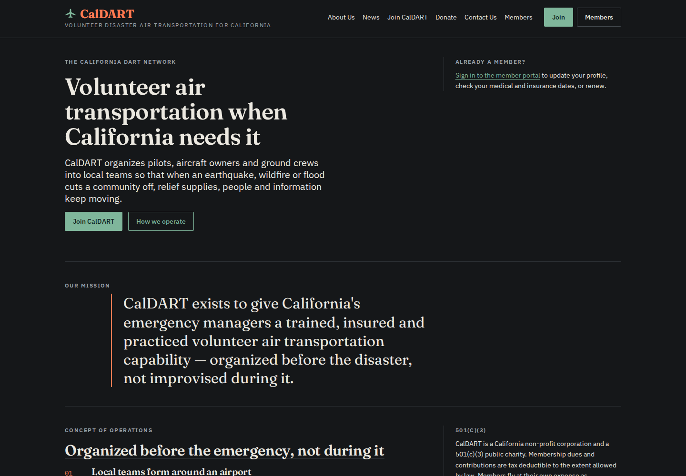
{kind=link}
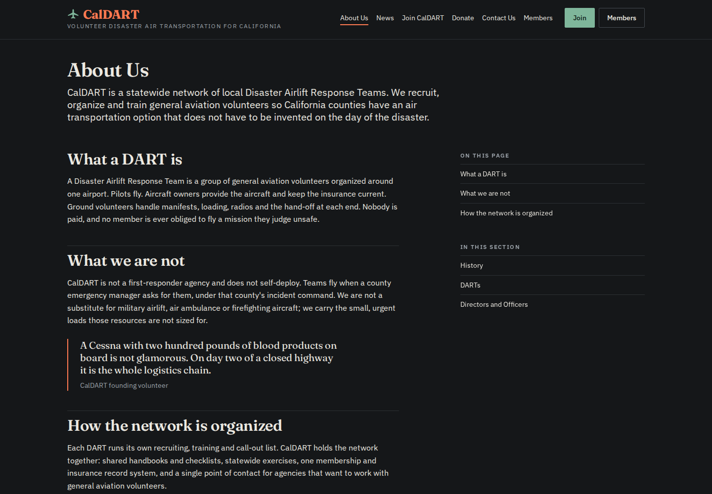
{kind=link}
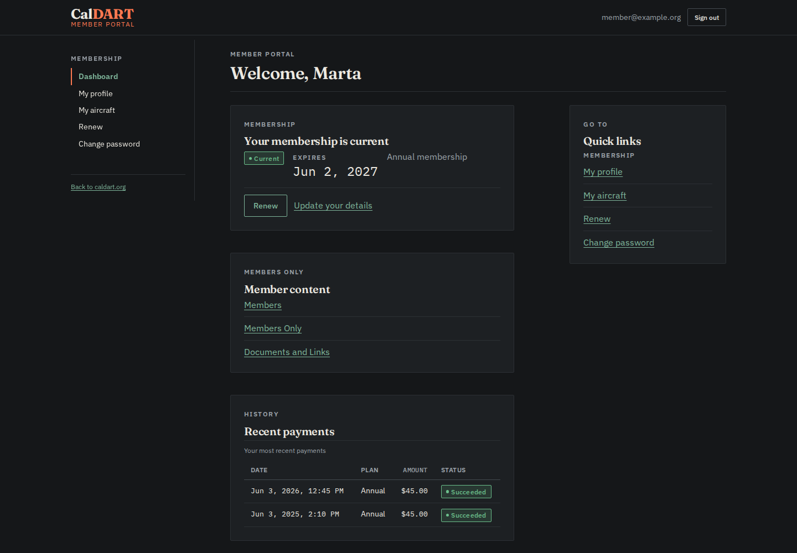
{kind=link}
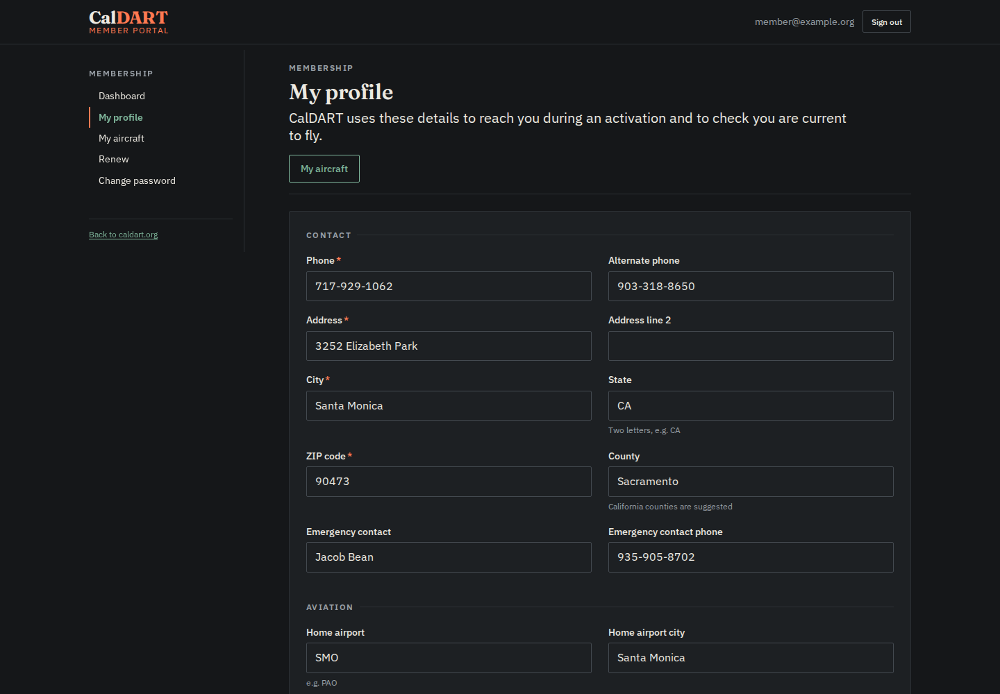
{kind=link}
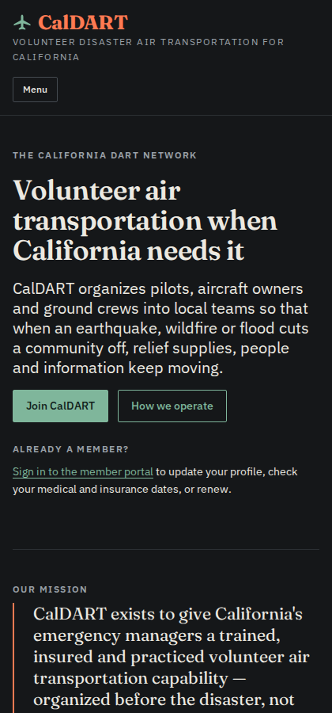
Palette
bg#151719bg-raised#1d2023bg-sunken#101214fg#ece9e1primary#7fb69bprimary-fg#10201aprimary-hover#98c9b0accent#ff7a52secondary#f2c14erule#2c3034rule-strong#444a50muted#9aa1a8ok#6cc08cwarn#e5b74abad#f0796afocus#f2c14eFonts
| Role | Family | Package |
|---|---|---|
| Display | Fraunces | @fontsource-variable/fraunces |
| Body | IBM Plex Sans | @fontsource/ibm-plex-sans |
| Mono | IBM Plex Mono | @fontsource/ibm-plex-mono |
Contrast (WCAG 2.1 AA)
| Pair | Ratio | Needs | |
|---|---|---|---|
| fg on bg | 14.81:1 | 4.5:1 | pass |
| fg on bg-raised | 13.49:1 | 4.5:1 | pass |
| fg on bg-sunken | 15.47:1 | 4.5:1 | pass |
| muted on bg | 6.88:1 | 4.5:1 | pass |
| muted on bg-raised | 6.26:1 | 4.5:1 | pass |
| muted on bg-sunken | 7.18:1 | 4.5:1 | pass |
| primary on bg | 7.76:1 | 4.5:1 | pass |
| primary on bg-raised | 7.07:1 | 4.5:1 | pass |
| primary-fg on primary | 7.29:1 | 4.5:1 | pass |
| primary-fg on primary-hover | 9.10:1 | 4.5:1 | pass |
| accent on bg | 6.98:1 | 4.5:1 | pass |
| ok on bg | 8.18:1 | 4.5:1 | pass |
| warn on bg | 9.59:1 | 4.5:1 | pass |
| bad on bg | 6.55:1 | 4.5:1 | pass |
| ok on ok-bg over bg | 6.27:1 | 4.5:1 | pass |
| warn on warn-bg over bg | 7.12:1 | 4.5:1 | pass |
| bad on bad-bg over bg | 5.24:1 | 4.5:1 | pass |
| focus on bg | 10.71:1 | 3:1 | pass |
Reproduce
- Theme file:
frontend/src/styles/themes/night.css - Attribute the server renders:
<html data-theme="night"> - Select it in Wagtail: Settings → Site settings → Theme, then save.
- Preview without saving (website or system administrator):
https://<your-site>/?theme=night - Font packages:
@fontsource-variable/fraunces @fontsource/ibm-plex-sans @fontsource/ibm-plex-mono
squadron
The CalDART logo on white: cobalt, crimson, sky, and a lot of air.
{kind=link}
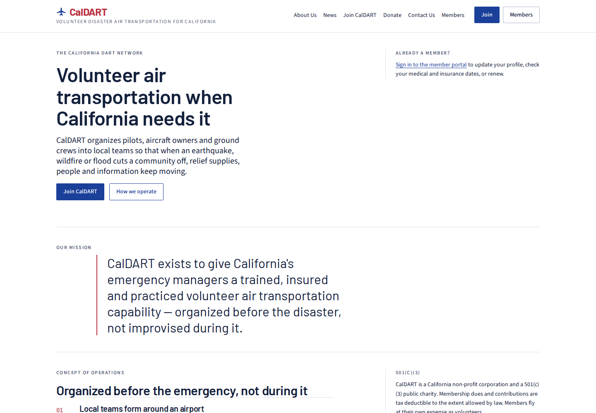
{kind=link}
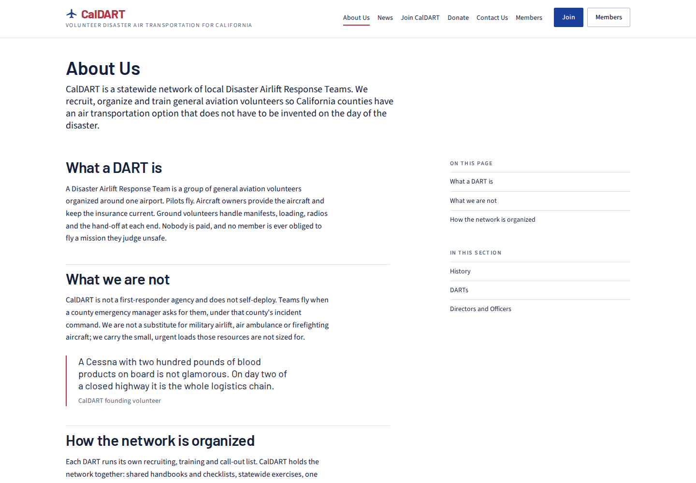
{kind=link}
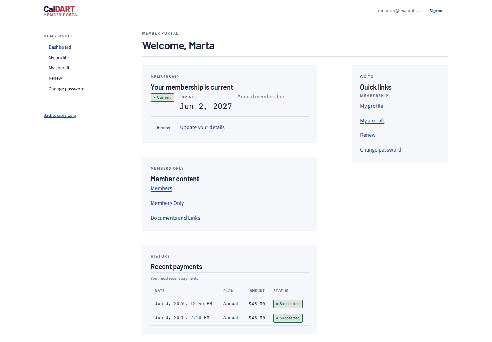
{kind=link}
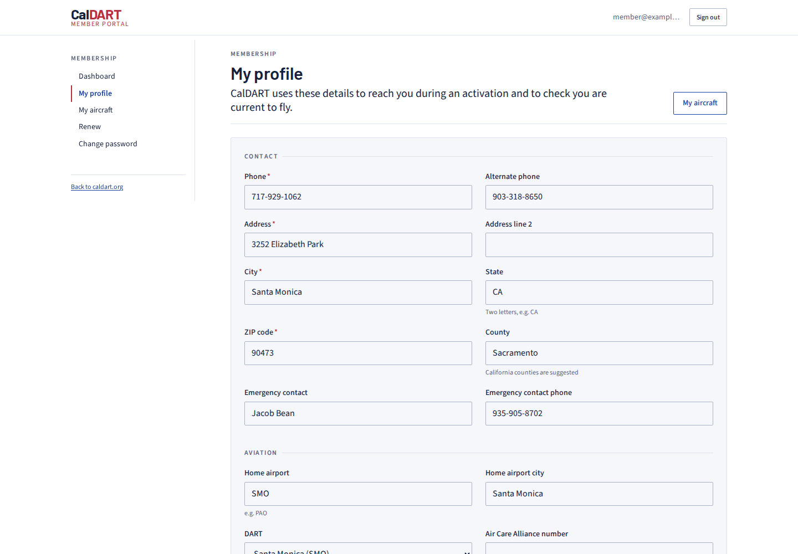
{kind=link}
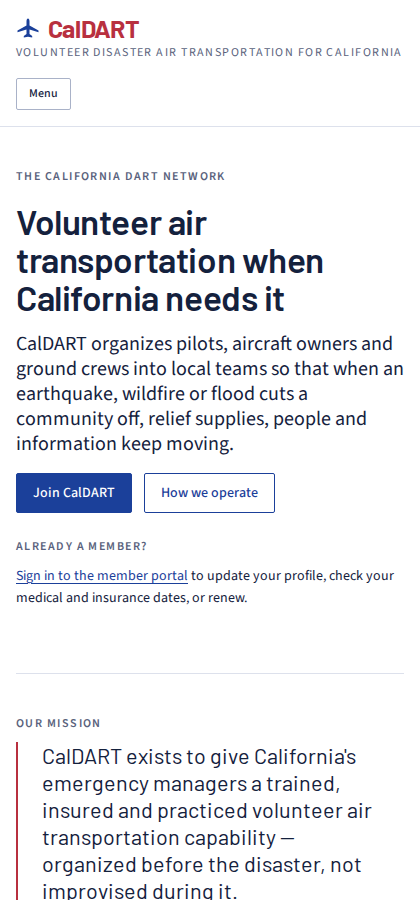
Palette
bg#ffffffbg-raised#f6f7fbbg-sunken#eceef5fg#14213dprimary#1b409aprimary-fg#ffffffprimary-hover#142f73accent#b8303fsecondary#4f8fe8rule#dde1ecrule-strong#a9b2c8muted#59627cok#27693fwarn#825900bad#ab3628focus#1b409aFonts
| Role | Family | Package |
|---|---|---|
| Display | Barlow | @fontsource/barlow |
| Body | Source Sans 3 | @fontsource-variable/source-sans-3 |
| Mono | JetBrains Mono | @fontsource-variable/jetbrains-mono |
Contrast (WCAG 2.1 AA)
| Pair | Ratio | Needs | |
|---|---|---|---|
| fg on bg | 15.97:1 | 4.5:1 | pass |
| fg on bg-raised | 14.92:1 | 4.5:1 | pass |
| fg on bg-sunken | 13.78:1 | 4.5:1 | pass |
| muted on bg | 6.06:1 | 4.5:1 | pass |
| muted on bg-raised | 5.66:1 | 4.5:1 | pass |
| muted on bg-sunken | 5.23:1 | 4.5:1 | pass |
| primary on bg | 9.35:1 | 4.5:1 | pass |
| primary on bg-raised | 8.73:1 | 4.5:1 | pass |
| primary-fg on primary | 9.35:1 | 4.5:1 | pass |
| primary-fg on primary-hover | 12.47:1 | 4.5:1 | pass |
| accent on bg | 5.94:1 | 4.5:1 | pass |
| ok on bg | 6.61:1 | 4.5:1 | pass |
| warn on bg | 6.22:1 | 4.5:1 | pass |
| bad on bg | 6.38:1 | 4.5:1 | pass |
| ok on ok-bg over bg | 5.54:1 | 4.5:1 | pass |
| warn on warn-bg over bg | 5.23:1 | 4.5:1 | pass |
| bad on bad-bg over bg | 5.30:1 | 4.5:1 | pass |
| focus on bg | 9.35:1 | 3:1 | pass |
Reproduce
- Theme file:
frontend/src/styles/themes/squadron.css - Attribute the server renders:
<html data-theme="squadron"> - Select it in Wagtail: Settings → Site settings → Theme, then save.
- Preview without saving (website or system administrator):
https://<your-site>/?theme=squadron - Font packages:
@fontsource/barlow @fontsource-variable/source-sans-3 @fontsource-variable/jetbrains-mono
flight-deck
The logo after dark: navy instruments, cobalt tint, crimson and amber.
{kind=link}
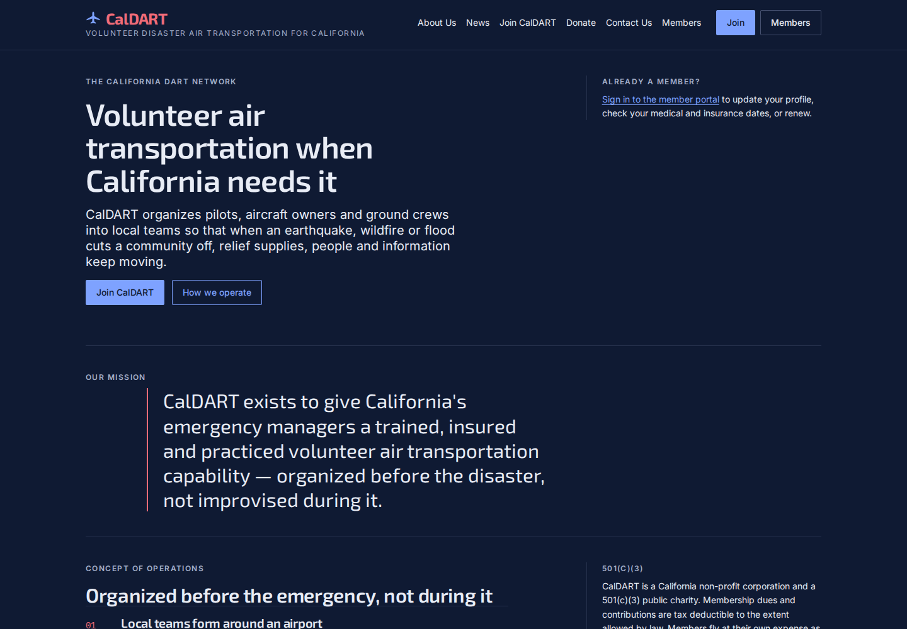
{kind=link}
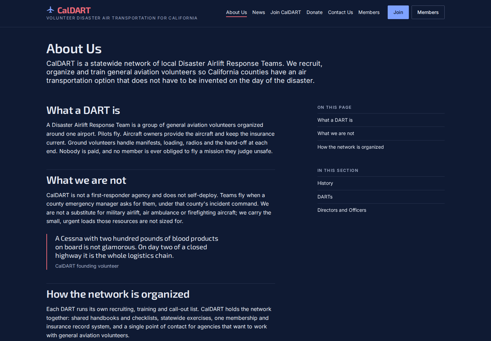
{kind=link}
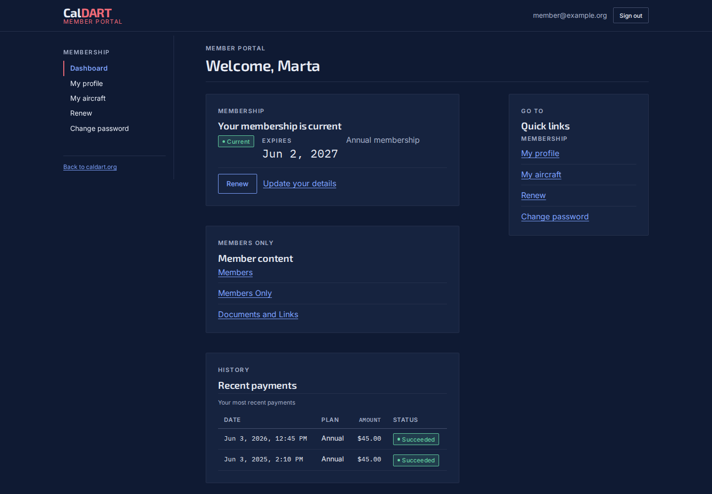
{kind=link}
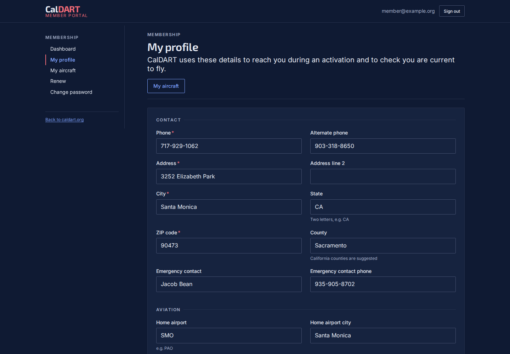
{kind=link}
Palette
bg#0f1a33bg-raised#16233fbg-sunken#0a1226fg#e8ecf5primary#7ea2ffprimary-fg#0f1a33primary-hover#9db8ffaccent#ef6b78secondary#ffc857rule#26314drule-strong#465170muted#a4afc9ok#63d0a0warn#ffc857bad#f4818cfocus#ffc857Fonts
| Role | Family | Package |
|---|---|---|
| Display | Exo 2 | @fontsource-variable/exo-2 |
| Body | Inter | @fontsource-variable/inter |
| Mono | IBM Plex Mono | @fontsource/ibm-plex-mono |
Contrast (WCAG 2.1 AA)
| Pair | Ratio | Needs | |
|---|---|---|---|
| fg on bg | 14.60:1 | 4.5:1 | pass |
| fg on bg-raised | 13.18:1 | 4.5:1 | pass |
| fg on bg-sunken | 15.74:1 | 4.5:1 | pass |
| muted on bg | 7.86:1 | 4.5:1 | pass |
| muted on bg-raised | 7.10:1 | 4.5:1 | pass |
| muted on bg-sunken | 8.47:1 | 4.5:1 | pass |
| primary on bg | 6.99:1 | 4.5:1 | pass |
| primary on bg-raised | 6.31:1 | 4.5:1 | pass |
| primary-fg on primary | 6.99:1 | 4.5:1 | pass |
| primary-fg on primary-hover | 8.83:1 | 4.5:1 | pass |
| accent on bg | 5.79:1 | 4.5:1 | pass |
| ok on bg | 9.10:1 | 4.5:1 | pass |
| warn on bg | 11.23:1 | 4.5:1 | pass |
| bad on bg | 6.88:1 | 4.5:1 | pass |
| ok on ok-bg over bg | 6.75:1 | 4.5:1 | pass |
| warn on warn-bg over bg | 8.08:1 | 4.5:1 | pass |
| bad on bad-bg over bg | 5.50:1 | 4.5:1 | pass |
| focus on bg | 11.23:1 | 3:1 | pass |
Reproduce
- Theme file:
frontend/src/styles/themes/flight-deck.css - Attribute the server renders:
<html data-theme="flight-deck"> - Select it in Wagtail: Settings → Site settings → Theme, then save.
- Preview without saving (website or system administrator):
https://<your-site>/?theme=flight-deck - Font packages:
@fontsource-variable/exo-2 @fontsource-variable/inter @fontsource/ibm-plex-mono
contrail
The logo gone light and airy: high sky paper, cobalt, crimson.
{kind=link}
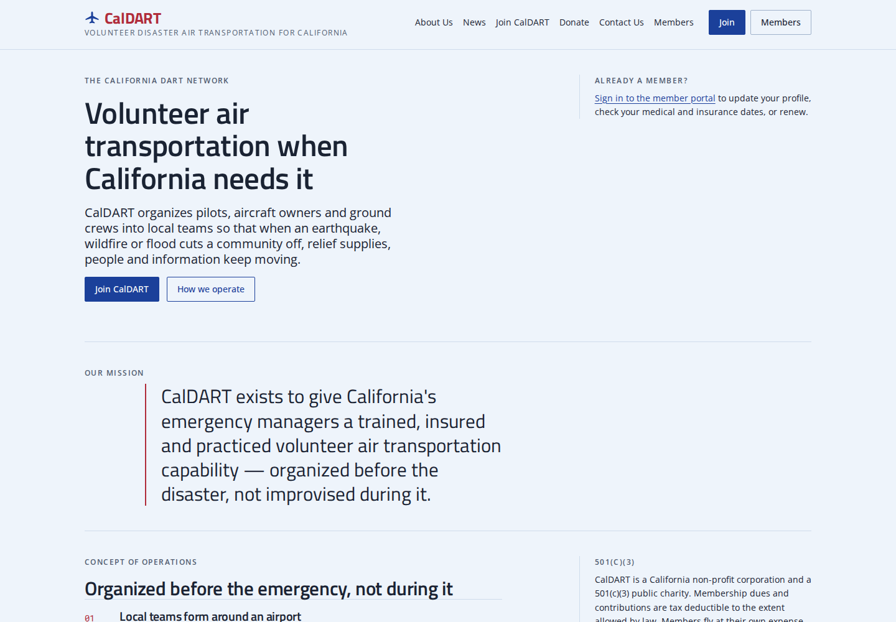
{kind=link}
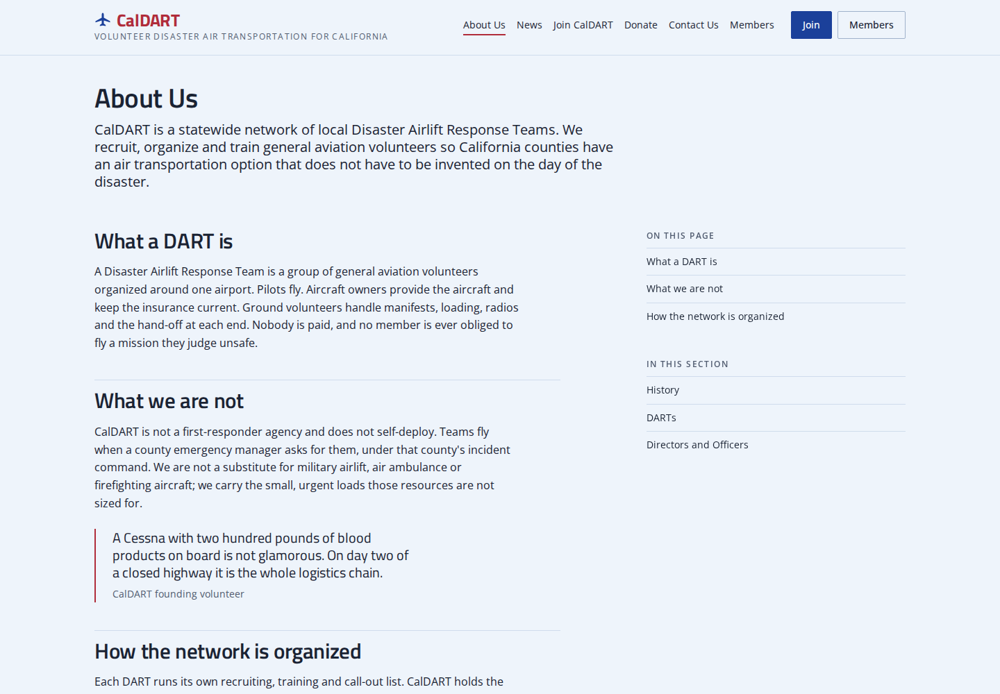
{kind=link}
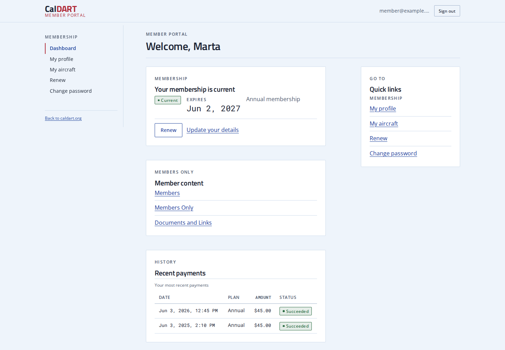
{kind=link}
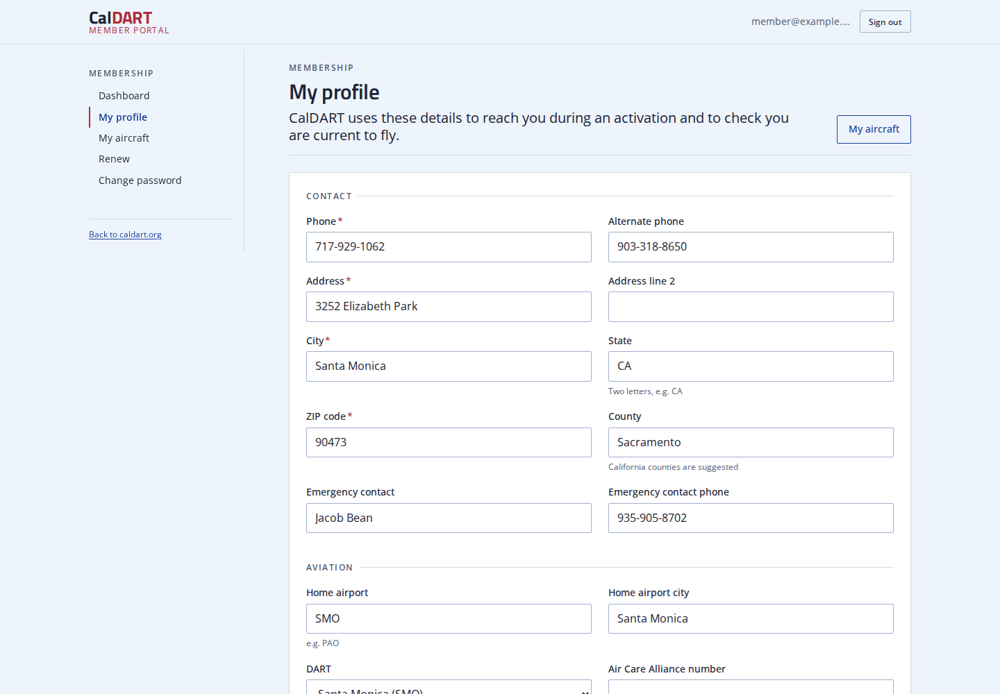
{kind=link}
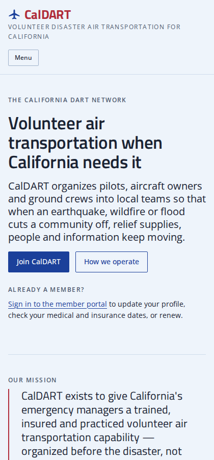
Palette
bg#eef4fbbg-raised#ffffffbg-sunken#dfe8f5fg#1a2333primary#1b409aprimary-fg#ffffffprimary-hover#142f73accent#b02c3asecondary#3b7dd8rule#cfdcecrule-strong#a0b2cbmuted#515c70ok#27693fwarn#825900bad#ab3628focus#1b409aFonts
| Role | Family | Package |
|---|---|---|
| Display | Titillium Web | @fontsource/titillium-web |
| Body | Open Sans | @fontsource-variable/open-sans |
| Mono | Roboto Mono | @fontsource-variable/roboto-mono |
Contrast (WCAG 2.1 AA)
| Pair | Ratio | Needs | |
|---|---|---|---|
| fg on bg | 14.24:1 | 4.5:1 | pass |
| fg on bg-raised | 15.76:1 | 4.5:1 | pass |
| fg on bg-sunken | 12.76:1 | 4.5:1 | pass |
| muted on bg | 6.09:1 | 4.5:1 | pass |
| muted on bg-raised | 6.74:1 | 4.5:1 | pass |
| muted on bg-sunken | 5.46:1 | 4.5:1 | pass |
| primary on bg | 8.44:1 | 4.5:1 | pass |
| primary on bg-raised | 9.35:1 | 4.5:1 | pass |
| primary-fg on primary | 9.35:1 | 4.5:1 | pass |
| primary-fg on primary-hover | 12.47:1 | 4.5:1 | pass |
| accent on bg | 5.81:1 | 4.5:1 | pass |
| ok on bg | 5.97:1 | 4.5:1 | pass |
| warn on bg | 5.62:1 | 4.5:1 | pass |
| bad on bg | 5.77:1 | 4.5:1 | pass |
| ok on ok-bg over bg | 5.02:1 | 4.5:1 | pass |
| warn on warn-bg over bg | 4.74:1 | 4.5:1 | pass |
| bad on bad-bg over bg | 4.80:1 | 4.5:1 | pass |
| focus on bg | 8.44:1 | 3:1 | pass |
Reproduce
- Theme file:
frontend/src/styles/themes/contrail.css - Attribute the server renders:
<html data-theme="contrail"> - Select it in Wagtail: Settings → Site settings → Theme, then save.
- Preview without saving (website or system administrator):
https://<your-site>/?theme=contrail - Font packages:
@fontsource/titillium-web @fontsource-variable/open-sans @fontsource-variable/roboto-mono
sectional
An aeronautical chart: chart cream, chart blue, airspace magenta, terrain tan.
{kind=link}
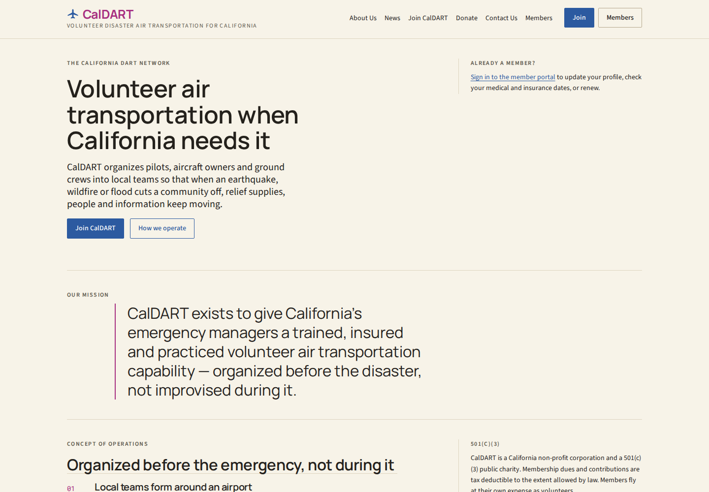
{kind=link}
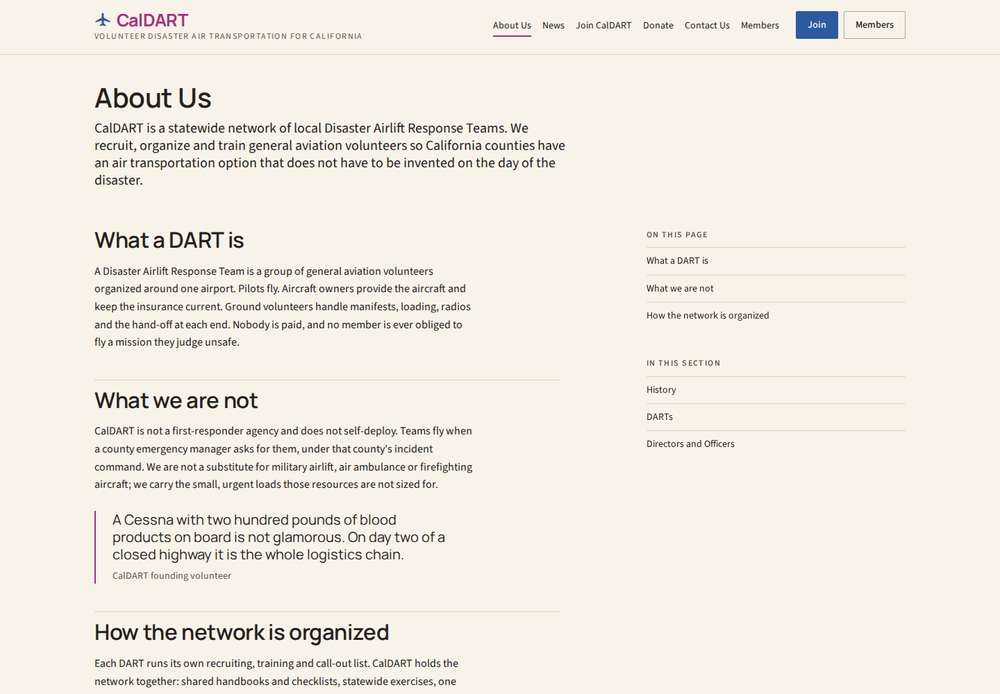
{kind=link}
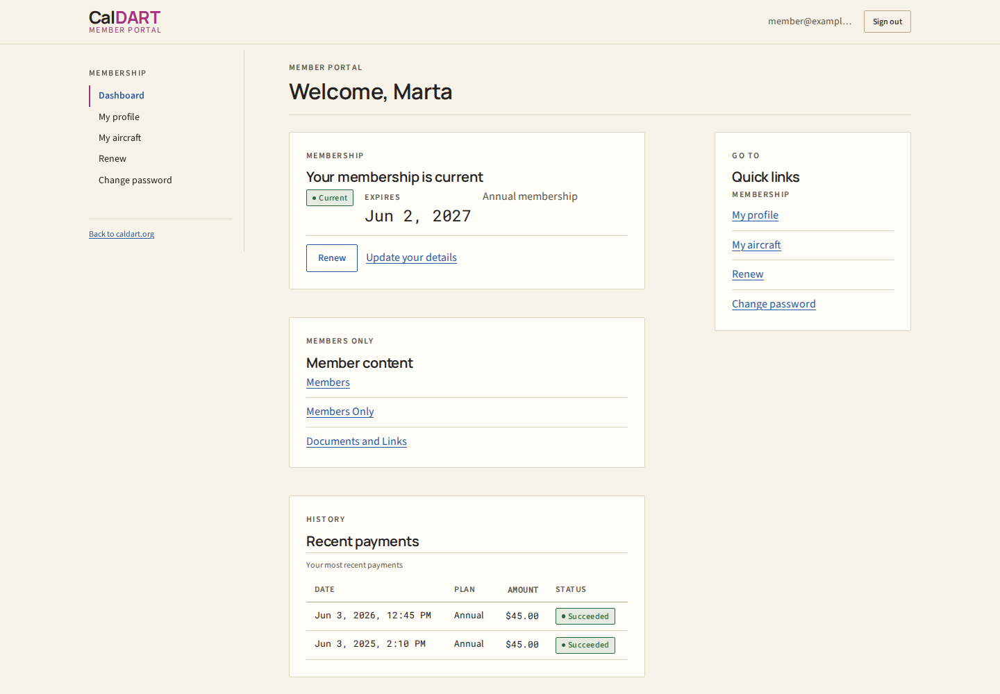
{kind=link}
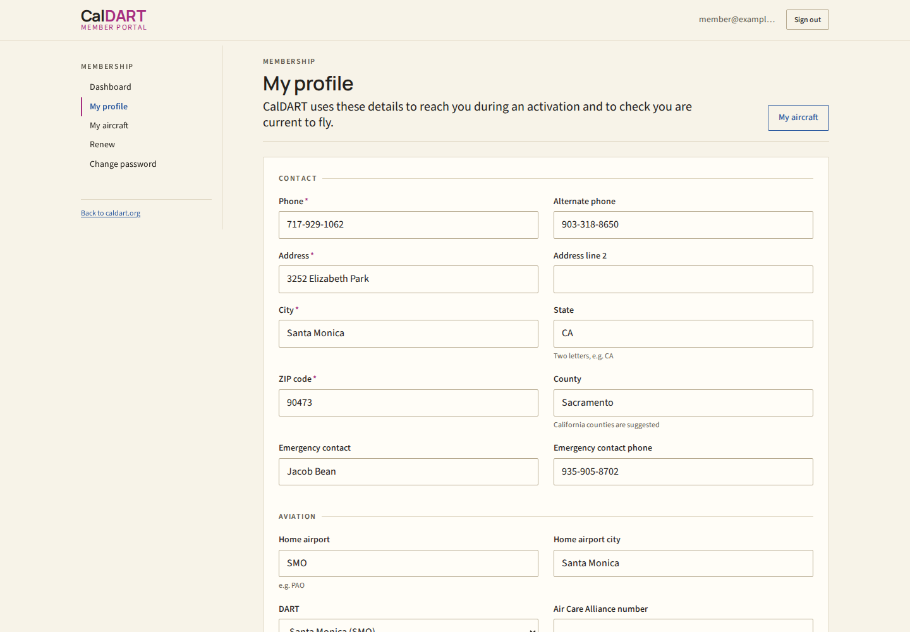
{kind=link}
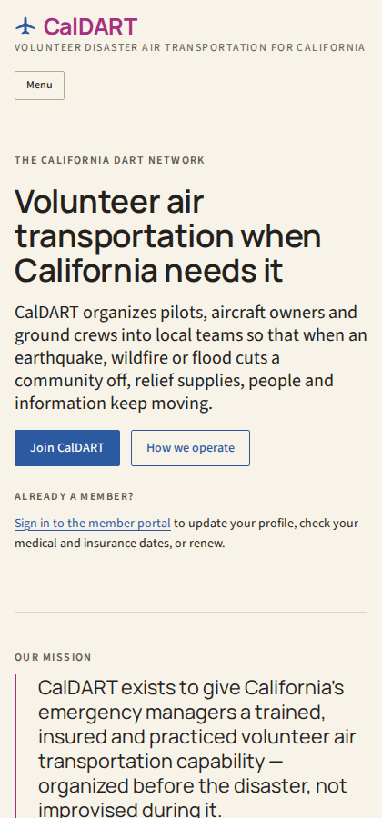
Palette
bg#f7f3e8bg-raised#fffdf7bg-sunken#ece5d3fg#24211cprimary#2c5aa0primary-fg#ffffffprimary-hover#204478accent#a72f80secondary#b3833frule#ded5c0rule-strong#b5a88dmuted#5d584cok#27693fwarn#825900bad#ab3628focus#2c5aa0Fonts
| Role | Family | Package |
|---|---|---|
| Display | Manrope | @fontsource-variable/manrope |
| Body | Source Sans 3 | @fontsource-variable/source-sans-3 |
| Mono | Roboto Mono | @fontsource-variable/roboto-mono |
Contrast (WCAG 2.1 AA)
| Pair | Ratio | Needs | |
|---|---|---|---|
| fg on bg | 14.47:1 | 4.5:1 | pass |
| fg on bg-raised | 15.77:1 | 4.5:1 | pass |
| fg on bg-sunken | 12.77:1 | 4.5:1 | pass |
| muted on bg | 6.39:1 | 4.5:1 | pass |
| muted on bg-raised | 6.96:1 | 4.5:1 | pass |
| muted on bg-sunken | 5.64:1 | 4.5:1 | pass |
| primary on bg | 6.16:1 | 4.5:1 | pass |
| primary on bg-raised | 6.71:1 | 4.5:1 | pass |
| primary-fg on primary | 6.82:1 | 4.5:1 | pass |
| primary-fg on primary-hover | 9.72:1 | 4.5:1 | pass |
| accent on bg | 5.63:1 | 4.5:1 | pass |
| ok on bg | 5.96:1 | 4.5:1 | pass |
| warn on bg | 5.61:1 | 4.5:1 | pass |
| bad on bg | 5.76:1 | 4.5:1 | pass |
| ok on ok-bg over bg | 5.01:1 | 4.5:1 | pass |
| warn on warn-bg over bg | 4.74:1 | 4.5:1 | pass |
| bad on bad-bg over bg | 4.80:1 | 4.5:1 | pass |
| focus on bg | 6.16:1 | 3:1 | pass |
Reproduce
- Theme file:
frontend/src/styles/themes/sectional.css - Attribute the server renders:
<html data-theme="sectional"> - Select it in Wagtail: Settings → Site settings → Theme, then save.
- Preview without saving (website or system administrator):
https://<your-site>/?theme=sectional - Font packages:
@fontsource-variable/manrope @fontsource-variable/source-sans-3 @fontsource-variable/roboto-mono
tarmac
Industrial neutrals: concrete, asphalt, safety yellow on surfaces only.
{kind=link}
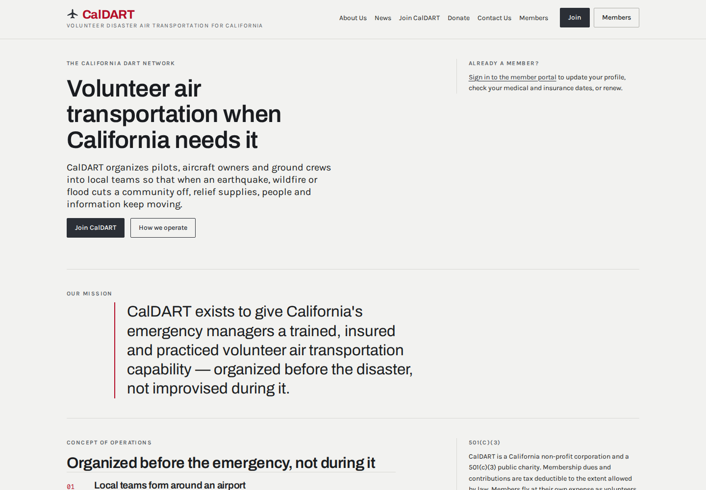
{kind=link}
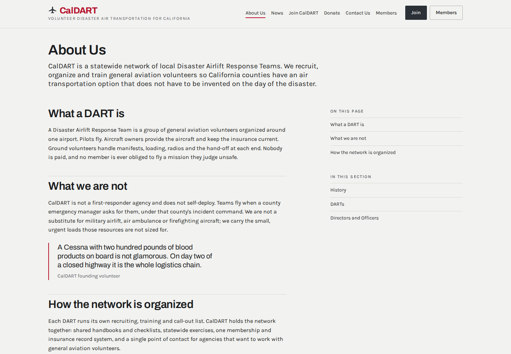
{kind=link}
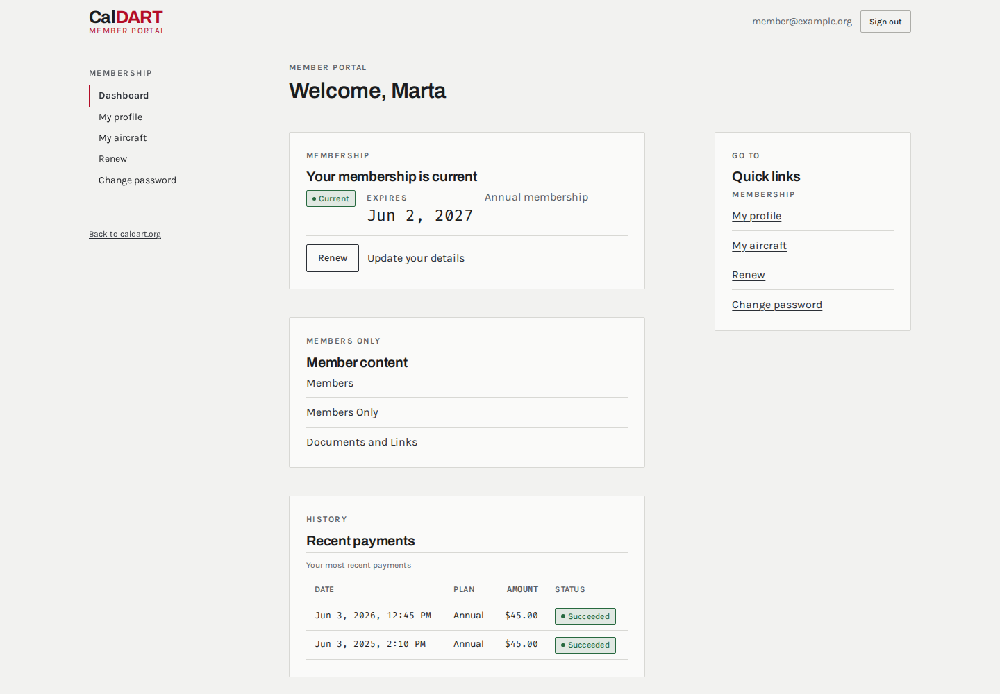
{kind=link}
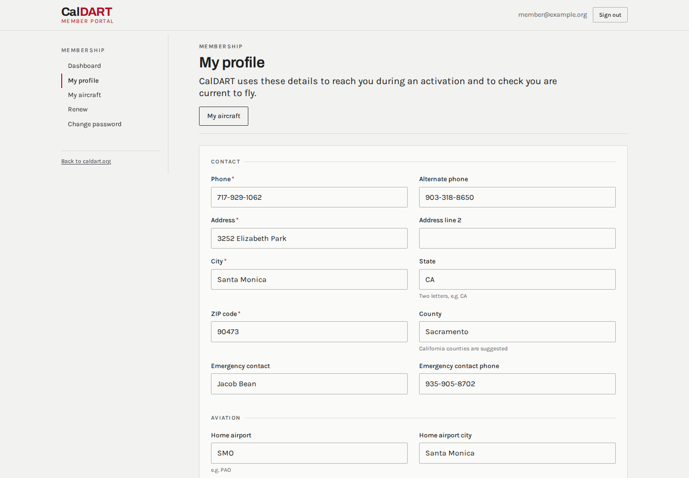
{kind=link}
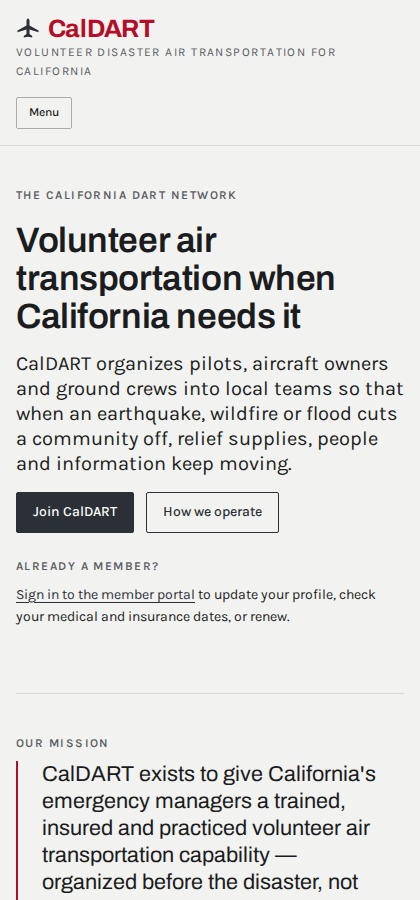
Palette
bg#f2f2f0bg-raised#fafaf9bg-sunken#e4e4e1fg#1a1c20primary#2b2f36primary-fg#ffffffprimary-hover#16181caccent#b40d27secondary#e3b505rule#d8d8d4rule-strong#adada8muted#5a5e64ok#27693fwarn#825900bad#ab3628focus#2b2f36Fonts
| Role | Family | Package |
|---|---|---|
| Display | Archivo | @fontsource-variable/archivo |
| Body | Karla | @fontsource-variable/karla |
| Mono | Fira Code | @fontsource-variable/fira-code |
Contrast (WCAG 2.1 AA)
| Pair | Ratio | Needs | |
|---|---|---|---|
| fg on bg | 15.22:1 | 4.5:1 | pass |
| fg on bg-raised | 16.34:1 | 4.5:1 | pass |
| fg on bg-sunken | 13.39:1 | 4.5:1 | pass |
| muted on bg | 5.82:1 | 4.5:1 | pass |
| muted on bg-raised | 6.24:1 | 4.5:1 | pass |
| muted on bg-sunken | 5.12:1 | 4.5:1 | pass |
| primary on bg | 11.99:1 | 4.5:1 | pass |
| primary on bg-raised | 12.87:1 | 4.5:1 | pass |
| primary-fg on primary | 13.44:1 | 4.5:1 | pass |
| primary-fg on primary-hover | 17.77:1 | 4.5:1 | pass |
| accent on bg | 6.19:1 | 4.5:1 | pass |
| ok on bg | 5.89:1 | 4.5:1 | pass |
| warn on bg | 5.55:1 | 4.5:1 | pass |
| bad on bg | 5.69:1 | 4.5:1 | pass |
| ok on ok-bg over bg | 4.95:1 | 4.5:1 | pass |
| warn on warn-bg over bg | 4.68:1 | 4.5:1 | pass |
| bad on bad-bg over bg | 4.74:1 | 4.5:1 | pass |
| focus on bg | 11.99:1 | 3:1 | pass |
Reproduce
- Theme file:
frontend/src/styles/themes/tarmac.css - Attribute the server renders:
<html data-theme="tarmac"> - Select it in Wagtail: Settings → Site settings → Theme, then save.
- Preview without saving (website or system administrator):
https://<your-site>/?theme=tarmac - Font packages:
@fontsource-variable/archivo @fontsource-variable/karla @fontsource-variable/fira-code
coastal
The California shoreline: fog paper, ocean teal, sunset coral, dune sand.
{kind=link}
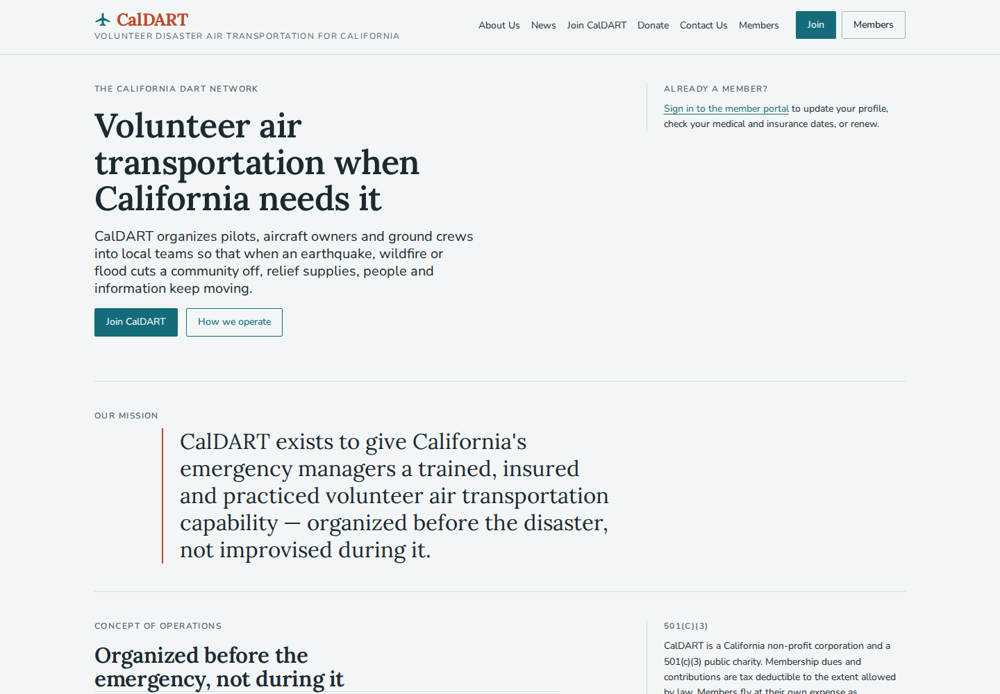
{kind=link}
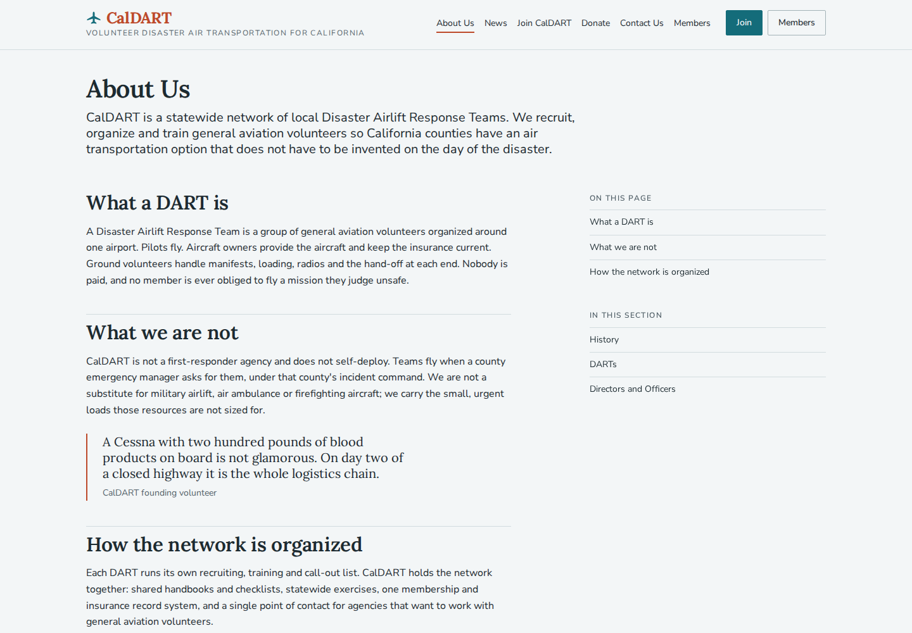
{kind=link}
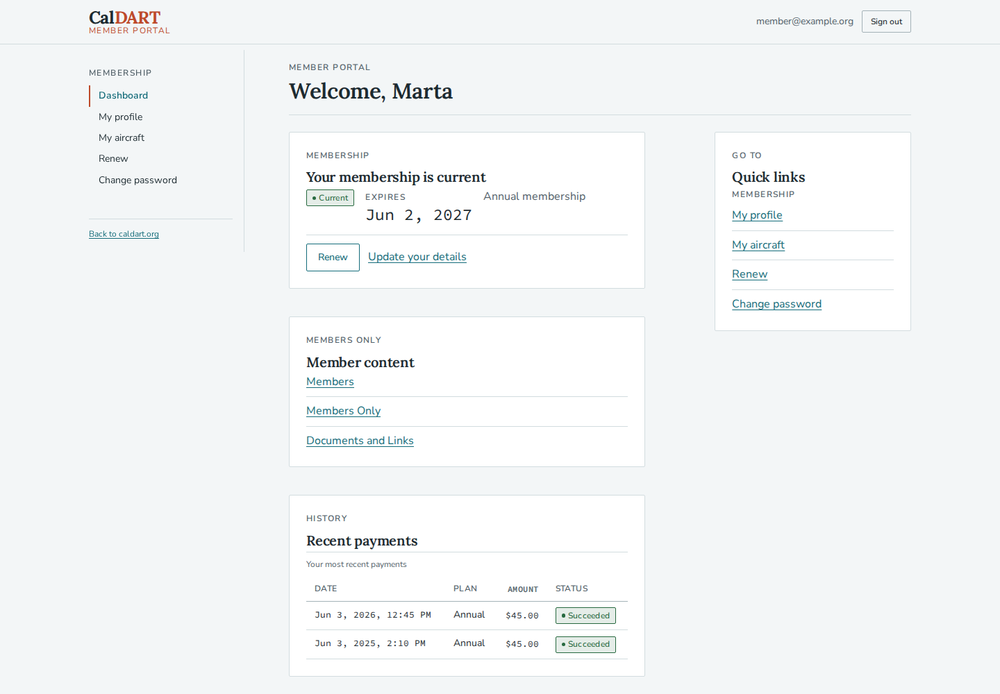
{kind=link}
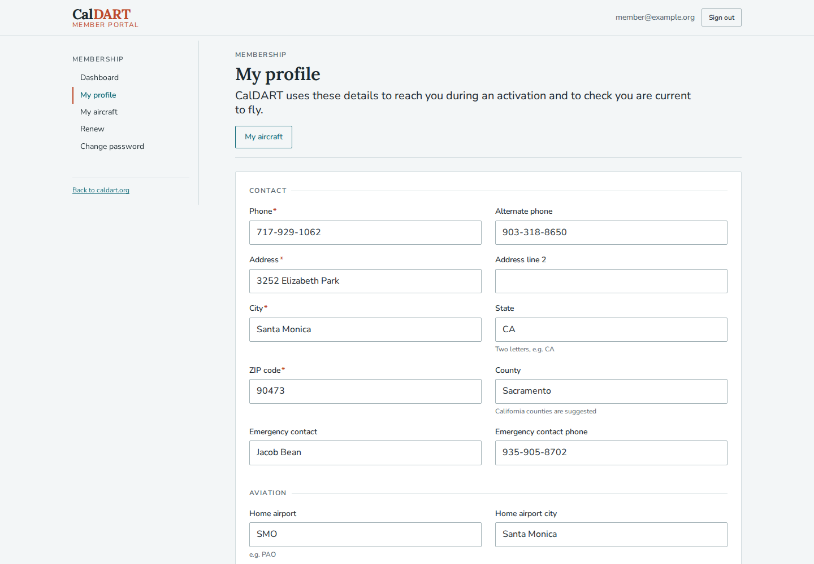
{kind=link}
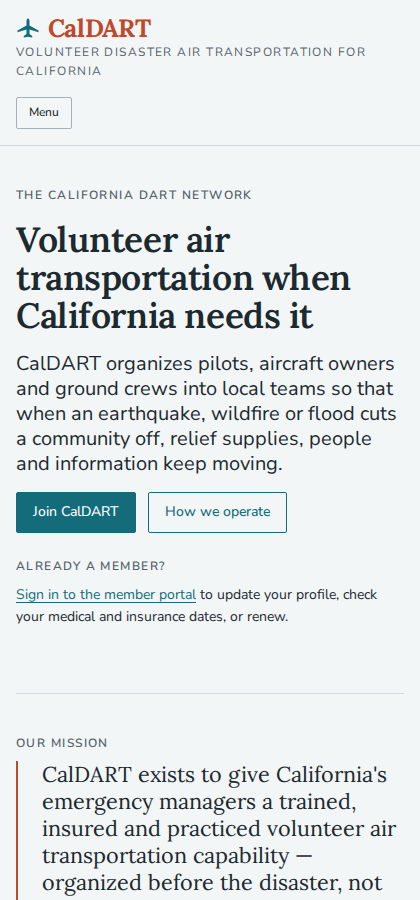
Palette
bg#f3f6f7bg-raised#ffffffbg-sunken#e3e9ebfg#1c2a30primary#146c7aprimary-fg#ffffffprimary-hover#0e515caccent#bd4a2asecondary#c9a15arule#d2dcdfrule-strong#a3b2b7muted#54626aok#27693fwarn#825900bad#ab3628focus#146c7aFonts
| Role | Family | Package |
|---|---|---|
| Display | Lora | @fontsource-variable/lora |
| Body | Nunito Sans | @fontsource-variable/nunito-sans |
| Mono | Source Code Pro | @fontsource-variable/source-code-pro |
Contrast (WCAG 2.1 AA)
| Pair | Ratio | Needs | |
|---|---|---|---|
| fg on bg | 13.59:1 | 4.5:1 | pass |
| fg on bg-raised | 14.76:1 | 4.5:1 | pass |
| fg on bg-sunken | 12.03:1 | 4.5:1 | pass |
| muted on bg | 5.80:1 | 4.5:1 | pass |
| muted on bg-raised | 6.30:1 | 4.5:1 | pass |
| muted on bg-sunken | 5.14:1 | 4.5:1 | pass |
| primary on bg | 5.60:1 | 4.5:1 | pass |
| primary on bg-raised | 6.08:1 | 4.5:1 | pass |
| primary-fg on primary | 6.08:1 | 4.5:1 | pass |
| primary-fg on primary-hover | 8.94:1 | 4.5:1 | pass |
| accent on bg | 4.63:1 | 4.5:1 | pass |
| ok on bg | 6.08:1 | 4.5:1 | pass |
| warn on bg | 5.72:1 | 4.5:1 | pass |
| bad on bg | 5.88:1 | 4.5:1 | pass |
| ok on ok-bg over bg | 5.12:1 | 4.5:1 | pass |
| warn on warn-bg over bg | 4.83:1 | 4.5:1 | pass |
| bad on bad-bg over bg | 4.90:1 | 4.5:1 | pass |
| focus on bg | 5.60:1 | 3:1 | pass |
Reproduce
- Theme file:
frontend/src/styles/themes/coastal.css - Attribute the server renders:
<html data-theme="coastal"> - Select it in Wagtail: Settings → Site settings → Theme, then save.
- Preview without saving (website or system administrator):
https://<your-site>/?theme=coastal - Font packages:
@fontsource-variable/lora @fontsource-variable/nunito-sans @fontsource-variable/source-code-pro
slate
Cool corporate: slate blue-gray, amber emphasis, a teal supporting hue.
{kind=link}
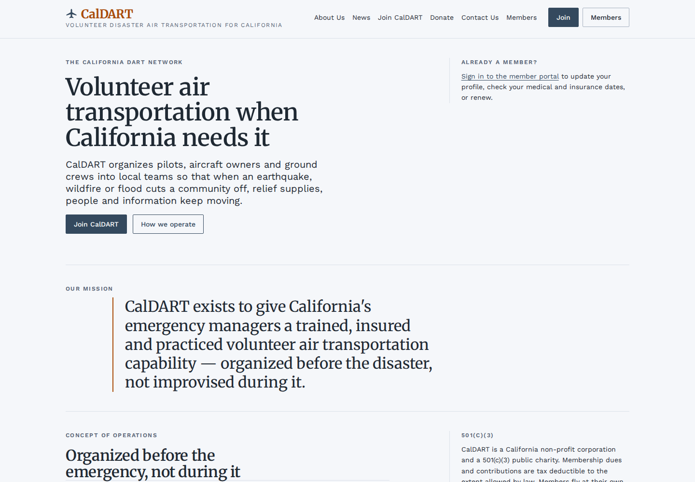
{kind=link}
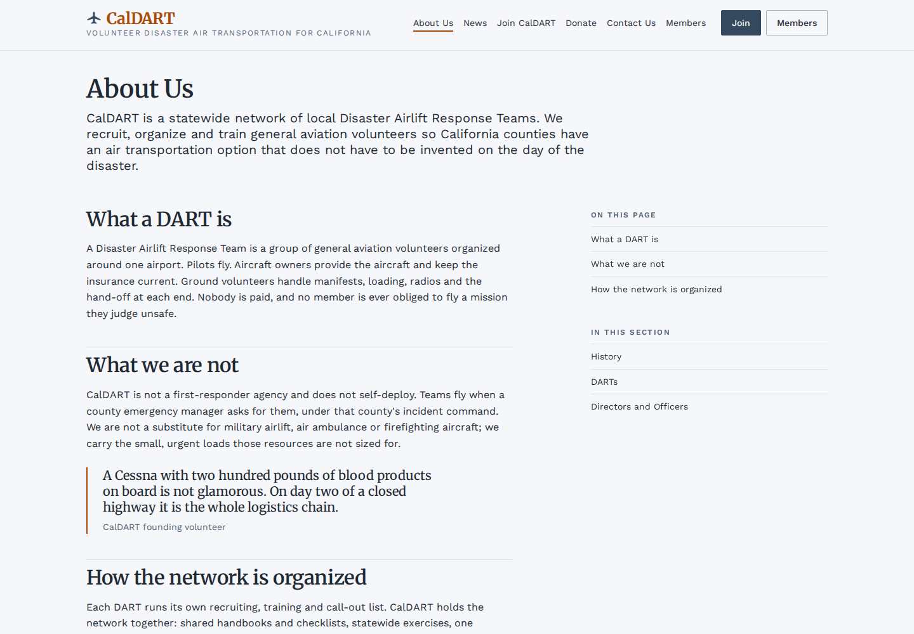
{kind=link}
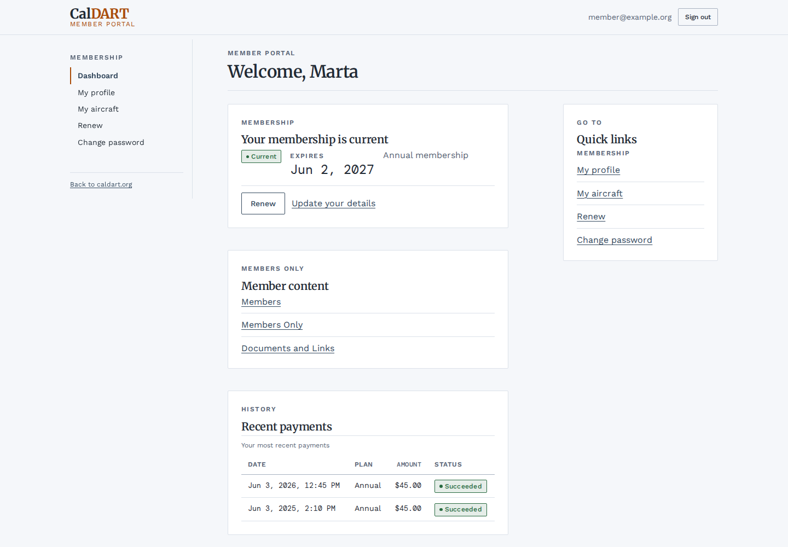
{kind=link}
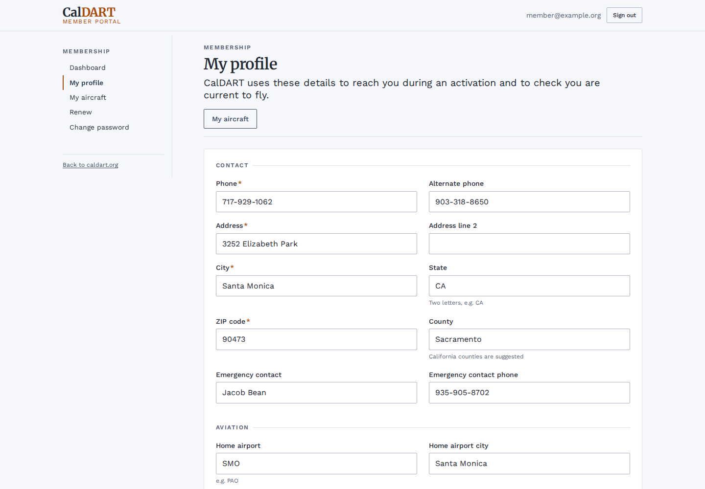
{kind=link}
Palette
bg#f5f7fabg-raised#ffffffbg-sunken#e8ecf1fg#1f2933primary#34495eprimary-fg#ffffffprimary-hover#22303faccent#a94c08secondary#2f7f9erule#dbe1e9rule-strong#a7b1c0muted#586475ok#27693fwarn#825900bad#ab3628focus#34495eFonts
| Role | Family | Package |
|---|---|---|
| Display | Merriweather | @fontsource-variable/merriweather |
| Body | Work Sans | @fontsource-variable/work-sans |
| Mono | DM Mono | @fontsource/dm-mono |
Contrast (WCAG 2.1 AA)
| Pair | Ratio | Needs | |
|---|---|---|---|
| fg on bg | 13.75:1 | 4.5:1 | pass |
| fg on bg-raised | 14.76:1 | 4.5:1 | pass |
| fg on bg-sunken | 12.44:1 | 4.5:1 | pass |
| muted on bg | 5.60:1 | 4.5:1 | pass |
| muted on bg-raised | 6.01:1 | 4.5:1 | pass |
| muted on bg-sunken | 5.06:1 | 4.5:1 | pass |
| primary on bg | 8.66:1 | 4.5:1 | pass |
| primary on bg-raised | 9.29:1 | 4.5:1 | pass |
| primary-fg on primary | 9.29:1 | 4.5:1 | pass |
| primary-fg on primary-hover | 13.44:1 | 4.5:1 | pass |
| accent on bg | 5.25:1 | 4.5:1 | pass |
| ok on bg | 6.16:1 | 4.5:1 | pass |
| warn on bg | 5.79:1 | 4.5:1 | pass |
| bad on bg | 5.95:1 | 4.5:1 | pass |
| ok on ok-bg over bg | 5.18:1 | 4.5:1 | pass |
| warn on warn-bg over bg | 4.89:1 | 4.5:1 | pass |
| bad on bad-bg over bg | 4.96:1 | 4.5:1 | pass |
| focus on bg | 8.66:1 | 3:1 | pass |
Reproduce
- Theme file:
frontend/src/styles/themes/slate.css - Attribute the server renders:
<html data-theme="slate"> - Select it in Wagtail: Settings → Site settings → Theme, then save.
- Preview without saving (website or system administrator):
https://<your-site>/?theme=slate - Font packages:
@fontsource-variable/merriweather @fontsource-variable/work-sans @fontsource/dm-mono
meridian
High-contrast civic: white, navy, burnt orange, one typeface throughout.
{kind=link}
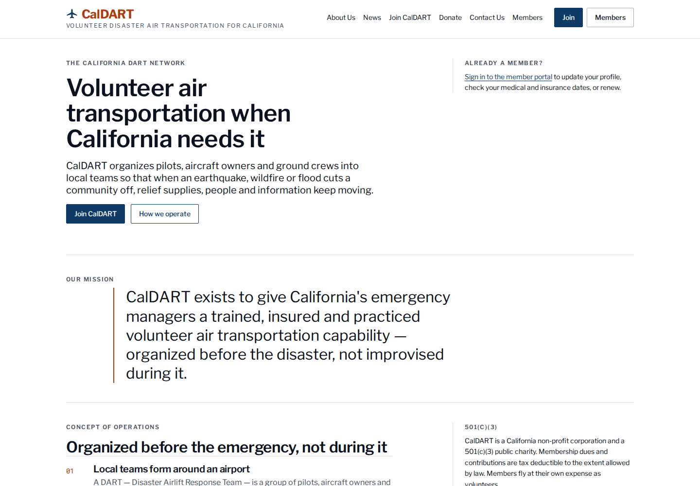
{kind=link}
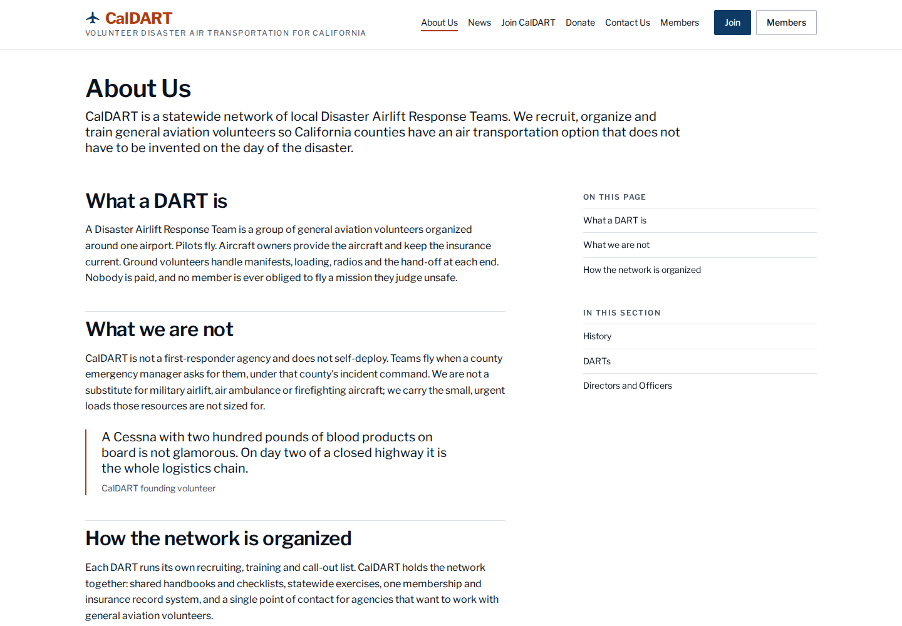
{kind=link}
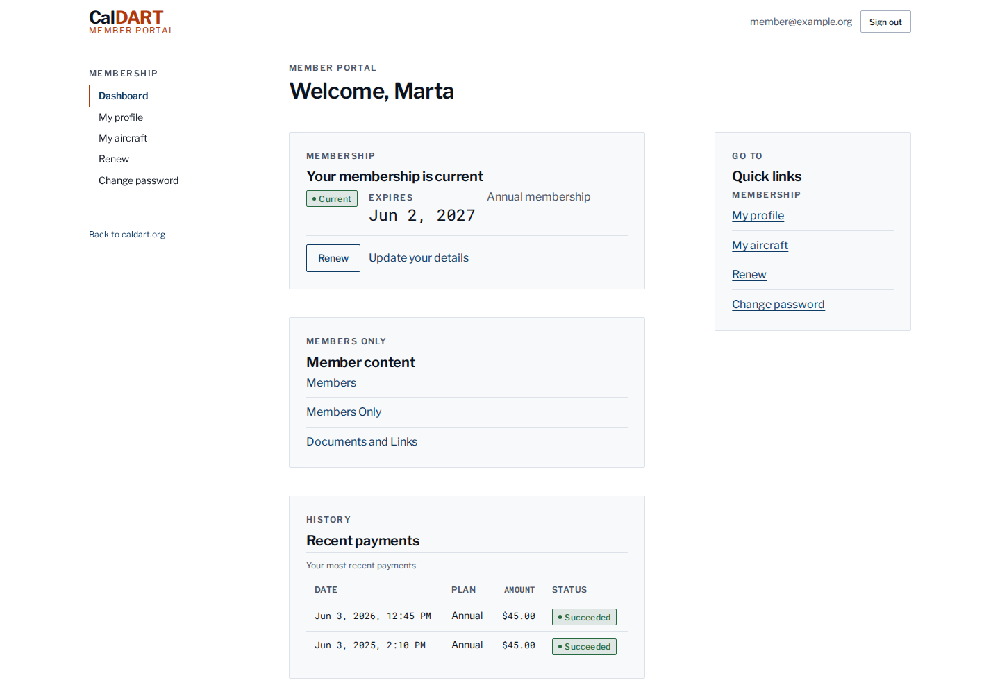
{kind=link}
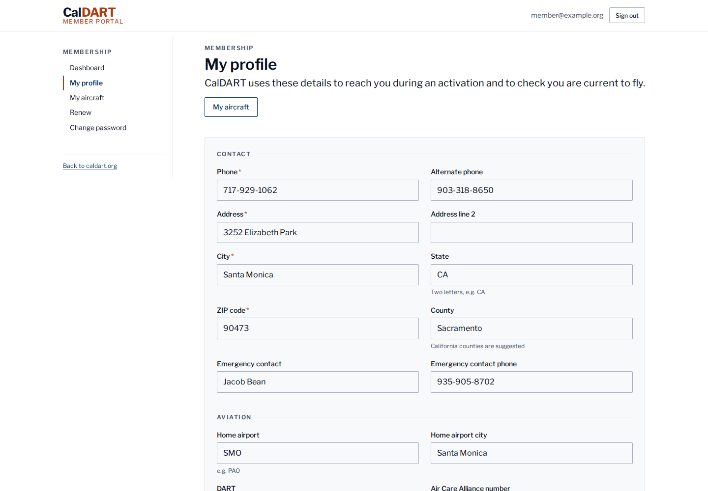
{kind=link}
Palette
bg#ffffffbg-raised#f8f9fbbg-sunken#eef0f4fg#0b1220primary#0d3b66primary-fg#ffffffprimary-hover#072744accent#b03a0asecondary#166b64rule#dde1e9rule-strong#a5aebemuted#4b5465ok#27693fwarn#825900bad#ab3628focus#0d3b66Fonts
| Role | Family | Package |
|---|---|---|
| Display | Libre Franklin | @fontsource-variable/libre-franklin |
| Body | Libre Franklin | @fontsource-variable/libre-franklin |
| Mono | Roboto Mono | @fontsource-variable/roboto-mono |
Contrast (WCAG 2.1 AA)
| Pair | Ratio | Needs | |
|---|---|---|---|
| fg on bg | 18.72:1 | 4.5:1 | pass |
| fg on bg-raised | 17.77:1 | 4.5:1 | pass |
| fg on bg-sunken | 16.41:1 | 4.5:1 | pass |
| muted on bg | 7.62:1 | 4.5:1 | pass |
| muted on bg-raised | 7.24:1 | 4.5:1 | pass |
| muted on bg-sunken | 6.68:1 | 4.5:1 | pass |
| primary on bg | 11.45:1 | 4.5:1 | pass |
| primary on bg-raised | 10.87:1 | 4.5:1 | pass |
| primary-fg on primary | 11.45:1 | 4.5:1 | pass |
| primary-fg on primary-hover | 15.19:1 | 4.5:1 | pass |
| accent on bg | 6.08:1 | 4.5:1 | pass |
| ok on bg | 6.61:1 | 4.5:1 | pass |
| warn on bg | 6.22:1 | 4.5:1 | pass |
| bad on bg | 6.38:1 | 4.5:1 | pass |
| ok on ok-bg over bg | 5.54:1 | 4.5:1 | pass |
| warn on warn-bg over bg | 5.23:1 | 4.5:1 | pass |
| bad on bad-bg over bg | 5.30:1 | 4.5:1 | pass |
| focus on bg | 11.45:1 | 3:1 | pass |
Reproduce
- Theme file:
frontend/src/styles/themes/meridian.css - Attribute the server renders:
<html data-theme="meridian"> - Select it in Wagtail: Settings → Site settings → Theme, then save.
- Preview without saving (website or system administrator):
https://<your-site>/?theme=meridian - Font packages:
@fontsource-variable/libre-franklin @fontsource-variable/roboto-mono
monterey-night
Charcoal dark: sea green primary, amber accent, a cool blue support.
{kind=link}
{kind=link}
{kind=link}
{kind=link}
{kind=link}
Palette
bg#14171cbg-raised#1c2027bg-sunken#0f1115fg#e6e8ecprimary#5ec8b8primary-fg#0f1115primary-hover#7ad6c8accent#ffb454secondary#8ab4f8rule#2a2f38rule-strong#474e5amuted#98a2b0ok#63d2a4warn#ffb454bad#ff8a80focus#ffb454Fonts
| Role | Family | Package |
|---|---|---|
| Display | Sora | @fontsource-variable/sora |
| Body | Inter | @fontsource-variable/inter |
| Mono | JetBrains Mono | @fontsource-variable/jetbrains-mono |
Contrast (WCAG 2.1 AA)
| Pair | Ratio | Needs | |
|---|---|---|---|
| fg on bg | 14.64:1 | 4.5:1 | pass |
| fg on bg-raised | 13.32:1 | 4.5:1 | pass |
| fg on bg-sunken | 15.40:1 | 4.5:1 | pass |
| muted on bg | 6.95:1 | 4.5:1 | pass |
| muted on bg-raised | 6.33:1 | 4.5:1 | pass |
| muted on bg-sunken | 7.32:1 | 4.5:1 | pass |
| primary on bg | 8.92:1 | 4.5:1 | pass |
| primary on bg-raised | 8.11:1 | 4.5:1 | pass |
| primary-fg on primary | 9.39:1 | 4.5:1 | pass |
| primary-fg on primary-hover | 11.05:1 | 4.5:1 | pass |
| accent on bg | 10.19:1 | 4.5:1 | pass |
| ok on bg | 9.65:1 | 4.5:1 | pass |
| warn on bg | 10.19:1 | 4.5:1 | pass |
| bad on bg | 7.87:1 | 4.5:1 | pass |
| ok on ok-bg over bg | 7.15:1 | 4.5:1 | pass |
| warn on warn-bg over bg | 7.54:1 | 4.5:1 | pass |
| bad on bad-bg over bg | 6.13:1 | 4.5:1 | pass |
| focus on bg | 10.19:1 | 3:1 | pass |
Reproduce
- Theme file:
frontend/src/styles/themes/monterey-night.css - Attribute the server renders:
<html data-theme="monterey-night"> - Select it in Wagtail: Settings → Site settings → Theme, then save.
- Preview without saving (website or system administrator):
https://<your-site>/?theme=monterey-night - Font packages:
@fontsource-variable/sora @fontsource-variable/inter @fontsource-variable/jetbrains-mono
granite
Near-monochrome: white, near-black, grays, and one blue for links.
{kind=link}
{kind=link}
{kind=link}
{kind=link}
{kind=link}
Palette
bg#ffffffbg-raised#fafafabg-sunken#f0f0f0fg#111111primary#1f1f1fprimary-fg#ffffffprimary-hover#000000accent#0a58casecondary#6b7280rule#e2e2e2rule-strong#b1b1b1muted#5c5c5cok#27693fwarn#825900bad#ab3628focus#0a58caFonts
| Role | Family | Package |
|---|---|---|
| Display | Inter Tight | @fontsource-variable/inter-tight |
| Body | Inter | @fontsource-variable/inter |
| Mono | Geist Mono | @fontsource-variable/geist-mono |
Contrast (WCAG 2.1 AA)
| Pair | Ratio | Needs | |
|---|---|---|---|
| fg on bg | 18.88:1 | 4.5:1 | pass |
| fg on bg-raised | 18.09:1 | 4.5:1 | pass |
| fg on bg-sunken | 16.57:1 | 4.5:1 | pass |
| muted on bg | 6.69:1 | 4.5:1 | pass |
| muted on bg-raised | 6.41:1 | 4.5:1 | pass |
| muted on bg-sunken | 5.87:1 | 4.5:1 | pass |
| primary on bg | 16.48:1 | 4.5:1 | pass |
| primary on bg-raised | 15.79:1 | 4.5:1 | pass |
| primary-fg on primary | 16.48:1 | 4.5:1 | pass |
| primary-fg on primary-hover | 21.00:1 | 4.5:1 | pass |
| accent on bg | 6.44:1 | 4.5:1 | pass |
| ok on bg | 6.61:1 | 4.5:1 | pass |
| warn on bg | 6.22:1 | 4.5:1 | pass |
| bad on bg | 6.38:1 | 4.5:1 | pass |
| ok on ok-bg over bg | 5.54:1 | 4.5:1 | pass |
| warn on warn-bg over bg | 5.23:1 | 4.5:1 | pass |
| bad on bad-bg over bg | 5.30:1 | 4.5:1 | pass |
| focus on bg | 6.44:1 | 3:1 | pass |
Reproduce
- Theme file:
frontend/src/styles/themes/granite.css - Attribute the server renders:
<html data-theme="granite"> - Select it in Wagtail: Settings → Site settings → Theme, then save.
- Preview without saving (website or system administrator):
https://<your-site>/?theme=granite - Font packages:
@fontsource-variable/inter-tight @fontsource-variable/inter @fontsource-variable/geist-mono